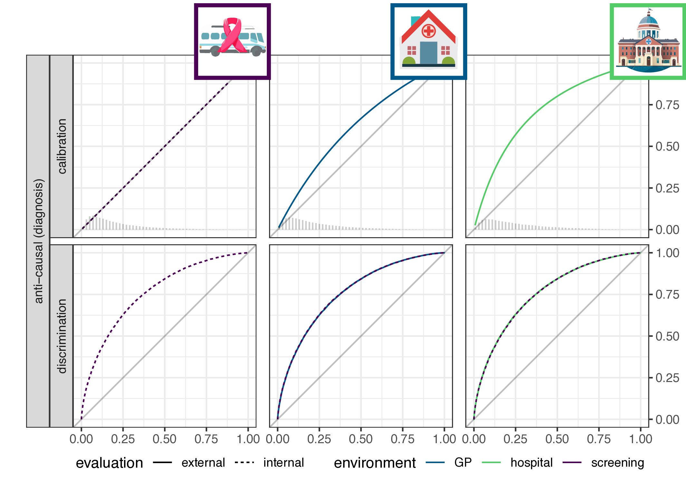

A causal viewpoint on prediction model performance under changes in case-mix
Methods meeting at the Julius Center, UMC Utrecht
2024-11-25
Motivation
- clinicians use prediction models for medical decisions, e.g.
- making a diagnosis
- estimating a patients prognosis
- triaging
- treatment decisions
- these prediction models need reliable performance
- issue: potential substantive difference between last evaluation and current use
Change in setting
What can we expect from the model’s performance (if anything) in the new setting?
This paper / talk
- recap performance: discrimination, calibration
- look at the causal direction of the prediction:
- are we predicting an effect based on its causes (e.g. heart attack, based on cholesterol and age)
- are we predicting a cause based on its effects (infer presence of CVA based on neurological symptoms)
- define shift in case-mix as a change in the marginal distribution of the cause variable
- conclude that in theory:
- for prognosis models: expect stable calibration, not discrimination
- for diagnosis models: expect stable discrimination, not calibration
- illustrate with simulation
- evaluate on 2030+ prediction model evaluations
Recap of performance metrics: discrimination and calibration
Discrimination: sensitivity, specificity, AUC
- prediction model \(f: X \to [0,1]\) (i.e. predicted probability, e.g. logistic regression)
- take a threshold \(\tau\), such that \(f(x) > \tau\) is a positive prediction
- tabulate predictions vs outcomes
| outcome | |||
|---|---|---|---|
| 1 | 0 | ||
| prediction | 1 | true positives | false positives |
| 0 | false negatives | true negatives |
Discrimination: sensitivity, specificity
| outcome | |||
|---|---|---|---|
| 1 | 0 | ||
| prediction | 1 | true positives | false positives |
| 0 | false negatives | true negatives | |
| sensitivity: TP / (TP+FN) | specificity: TN / (TN+FP) |
sensitivity: \(P(X=1 | Y=1)\), specificity: \(P(X=0 | Y=0)\)
note: sensitivity only requires data from the column of postive cases (i.e. \(Y=1\)), and specificity on negatives
event-rate: fraction of \(Y=1\) of total cases
in theory discrimination is event-rate independent (Hond 2023)
Discrimination: ROC curve and AUC
if we vary the threshold \(0 \leq \tau \leq 1\), we get a ROC curve, and the AUC is the area under this curve

Calibration
“A model is said to be well calibrated if for every 100 patients given a risk of x%, close to x have the event.” (Van Calster and Vickers 2015)
Calibration plot
\(p(Y=1|X)\) versus \(f(x)\)
Performance metrics summary
- discrimination: function of \(P(X|Y)\) (features given outcome)
- calibration: function of \(P(Y|X)\) (outcome given features)
A causal description of shifts in case-mix
Where does the association come from?
In prediction, we have features \(X\) and outcome \(Y\) and model \(Y|X\)
1. \(X\) causes \(Y\): often in prognosis (\(Y\): heart-attack, \(X\): cholesterol and age)
2. \(Y\) causes \(X\): often in diagnosis (CVA, based on neurological symptoms)
3. \(Z\) causes both \(X\) and \(Y\): confounding (yellow fingers predict lung cancer)
Defining a shift in case-mix
Define a shift in case-mix a change in the marginal distribution of the cause variable, e.g.
- filter on risk factors (pregancies with type 1 diabetes in hospital)
- filter on outcome risk (send patients with neurological symptoms to CVA center)
- denote environment as variable \(E\):
What does this definition imply?
- \(P(Y|X,E) = P(Y|X)\)
- in words: \(P(Y|X)\) is transportable across environments
- because there is no arrow from \(E\) to \(Y\), \(X\) blocks effect of \(E\) on \(Y\)
- \(P(X|Y,E) \neq P(X|Y)\)
- in words: \(P(X|Y)\) is not transportable across environments
- implication for causal (prognosis) prediction:
- calibration is functional of \(P(Y|X)\), thus stable
- discrimination is functional of \(P(X|Y)\), thus not stable
- for anti-causal (diagnosis) prediction: the reverse
- main result: discrimination or calibration may be preserved under changes in case-mix, but never both
Why define a shift in case-mix this way?
- cause is temporally prior to effect, filtering at least on cause may be likely in many settings
- filtering on both: anything goes, cannot say anything about expected performance based on graphical information
Illustrative simulation and empirical validation
Simulation setup
\[\begin{align*} \label{eq:dgm-prognosis} \text{prognosis:} & & \text{diagnosis:} & \\ P_y &\sim \text{Beta}(\alpha_e,\beta_e) & y &\sim \text{Bernouli}(P_e) \\ x &= \text{logit}(P_y) & x &\sim N(y, 1) \\ y &\sim \text{Bernoulli}(P_y) & & \end{align*}\]

Empirical validation
- a study of 2030+ evaluations of 1300+ prediction models (Wessler et al. 2021)
- registry: all data available with only 4000 clicks
- solution: scrape the website
Results
- for each study, extract AUC on internal validation and for each external validation (no calibration data available)
- calculate scaled deviation from internal AUC (\(\delta\))
- theory implies:
- for prognosis models: \(\delta \neq 0\)
- for diagnostic models: \(\delta=0\)
- test: variance of \(\delta\) between evaluations of diagnostic or prognostic models (F-test)
- result: \(\text{VAR}(\delta_{\text{diagnostic}})=0.019 \approx 0.122 * \text{VAR}(\delta_{\text{prognostic}})\), p-value\(<0.001\)
Conclusion
- discrimination: a function of features given outcome
- calibration: a function of outcome given outcome
- are we predicting an effect based on its causes (e.g. heart attack, based on cholesterol and age)
- are we predicting a cause based on its effects (infer presence of CVA based on neurological symptoms)
- define shift in case-mix as a change in the marginal distribution of the cause variable
- conclude that in theory:
- for prognosis models: expect stable calibration, not discrimination
- for diagnosis models: expect stable discrimination, not calibration
- illustrated with simulation, evaluated on 2030+ prediction model evaluations, one direction of theory seems confirmed
- future work: more empirical validations
Questions:
- how does this align with what you observed?
- where to publish this work?
References
©Wouter van Amsterdam — WvanAmsterdam — wvanamsterdam.com/talks